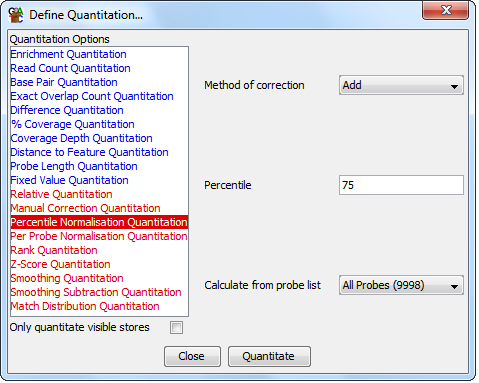

Percentile Normalisation Quantitation
Although there are various normalisation options available in the inital
quantitaion methods it will sometimes be the case that there are differences
in the distribution of your values which mean that the normalised data are
not directly comparable. For example you might have a small number of probes
in which a huge number of reads suddenly appear, and this may make it appear
that all other probes are decreasing where actually you'd like them to stay
the same.
The Percentile Normalisation Quantitation allows you to pick a point on the
distribution of values in your data and it will apply a scaling to all data
stores so that they share the same value at that point. The value used at
the common point will be the highest value seen in any of the data stores
being normalised.

Options
- What type of correction to apply (add or multiply). If you choose to add then
a constant factor will be added to each probe value. For multiply a scalaing factor is caluculated
using the difference between the current value and the minimum value in each set. Each value then
has the minimum value subtracted, is multipled by the scaling factor, and then the minimum value
is re-added. This has the effect of "stretching" your distribution, keeping the start
value the same, but increasing everything else such that the distributions cross at the selected
percetile
- Which percentile of your distribtion you would like to use to calculate the scaling factor. You should
avoid using 0 or 100 since these are likely to contain extreme outliers in your set. Generally values
from 50-90% are ideal, but you should look at your distributions to see if these are appropriate
for your data.